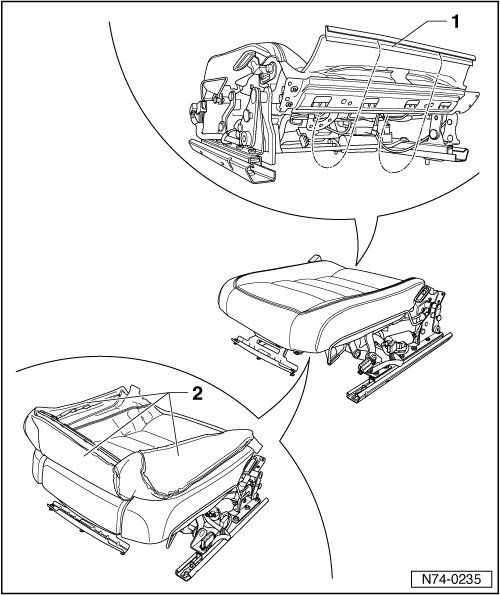
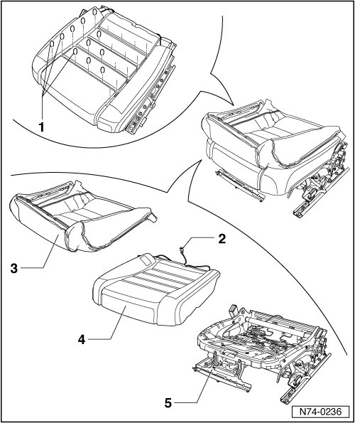
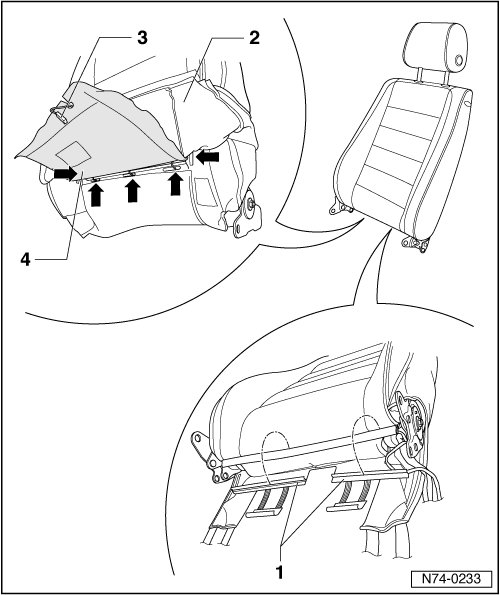
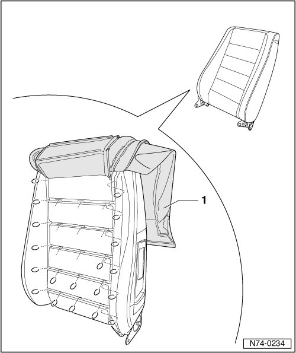

Front Seat Cushion and Upholstery
Front Seat Cushion and Upholstery
--> [ Seat Cushion and Upholstery ]
--> [ Seat Backrest and Upholstery ]
Seat Cushion and Upholstery
• Removal and installation of the components is described for the left-hand seat. The same instructions apply for removal and installation of components for right seat.
Removing
- Remove belt anchor --> [ Belt Anchor ] Belt Anchor.
- Remove 12-way seat --> [ Front Seat ] Front Seats.
- Remove backrest hinge trim for 12-way seat --> [ Front Seat Backrest Hinge trim ] Front Seats.
- Remove trim for 12-way seat --> [ Front Seat Trim ] Front Seats.
- Remove backrest for 12-way seat --> [ Front Seat Backrest ] Front Seats.
- Remove profile - 1 - from receptacle.
- Open all profiles and cover attachments.
- Separate cover around seat base and fold outer edge - 2 - upward.

- Cut through upholstery clips - 1 - using suitable pliers.
• In vehicles with the "W12" and the "R-Line" and " R 50" interior, the front seat cover is secured to the padding with adhesive strips instead of upholstery clips.
• When removing the cover, loosen it from the padding carefully to avoid tearing it.
• When installing the cover, use upholstery pliers (V.A.G 1634) to the install upholstery clips.
- Separate seat heater wiring harness - 2 -.
- Remove the cover - 3 - and the upholstery - 4 - from the seat frame - 5 -.

Installing
- Perform the steps used for removal in reverse order.
Seat Backrest and Upholstery
• Removal and installation of the components is described for the left-hand seat. The same instructions apply for removal and installation of components for right seat.
Removing
- Remove belt anchor --> [ Belt Anchor ] Belt Anchor.
- Remove 12-way seat --> [ Front Seat ] Front Seats.
- Remove backrest hinge trim for 12-way seat --> [ Front Seat Backrest Hinge trim ] Front Seats.
- Remove trim for 12-way seat --> [ Front Seat Trim ] Front Seats.
- Remove backrest for 12-way seat --> [ Front Seat Backrest ] Front Seats.
- Pull the headrest out of the backrest.
- Detach profile in lower backrest - 1 -.
- Fold cover - 2 - upward, disconnect backrest heater wiring harness - 3 - and flip backrest heater - 4 - upward.
- Cut through the 5 upholstery clips - arrows - in this area.
• In vehicles with the "W12" and the "R-Line" and " R 50" interior, the front seat backrest cover is secured to the backrest padding with adhesive strips instead of upholstery clips.
• When removing the cover, loosen it from the backrest padding carefully to avoid tearing it.

- Continue to fold the cover - 1 - upward and cut through the next five upholstery clips.
- Cut through all upholstery clips in the same manner.
• When installing the cover, use upholstery pliers (V.A.G 1634) to the install upholstery clips.
- Operate locking mechanism in headrest guides and pull headrest guides out of backrest frame.
- Pull off cover from backrest.
- Detach backrest heater from backrest and pull padding from backrest frame.

Installing
- Perform the steps used for removal in reverse order.